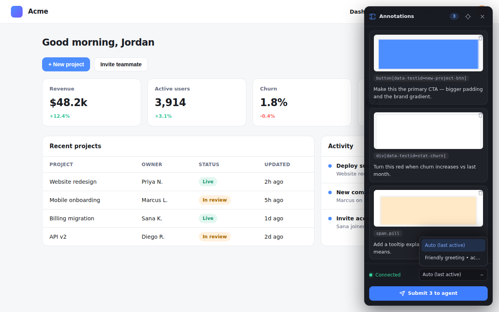
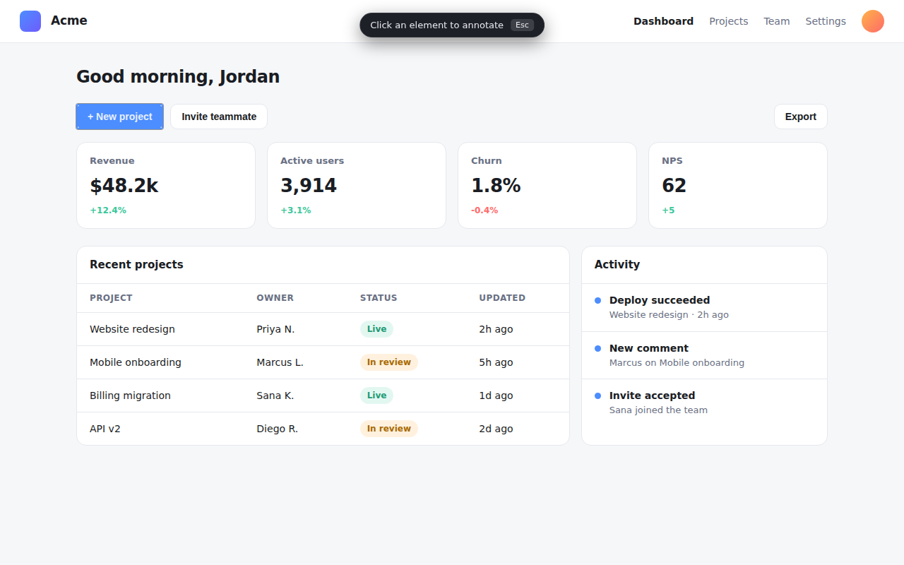
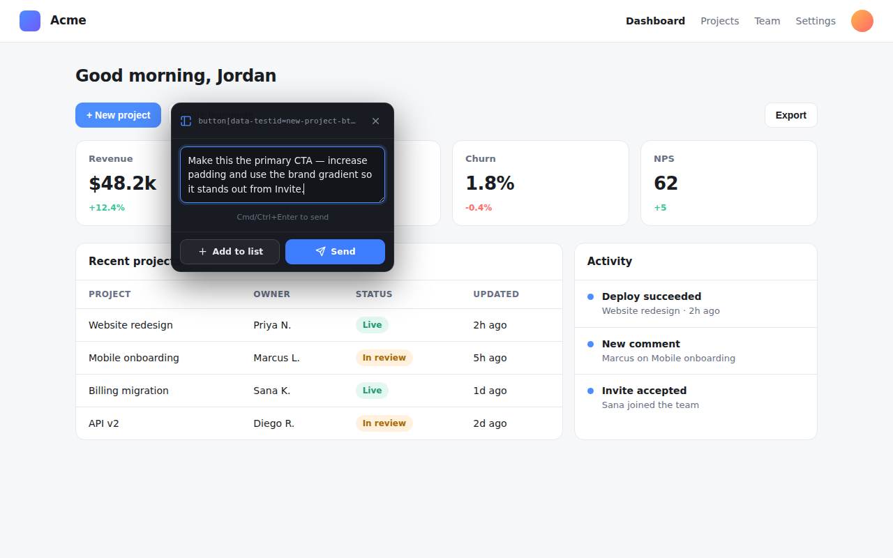

Select any element in your browser, type an instruction, and send it — with the element's full context — straight to your OpenCode coding agent. No more “the third card on the pricing section.”
Alt+A pick an element · Alt+Shift+A open the list

Why it works
Every annotation carries structured, code-locatable context — so your agent can find the source behind what you clicked and change it with confidence.
Tag, id, data-testid, role, ARIA, classes, text, ancestors, nearest landmark — plus the
React/Preact/Vue component path when available.
Talks only to your own 127.0.0.1 endpoint over SSH. No screenshots are sent — text and
metadata only. Secret-looking attributes are redacted before anything leaves the page.
Hit Send for one quick change, or Add to list to stack several annotations and submit them together — each targeted at the agent session you choose.
How it works
Built for a headless-server + remote-desktop setup. Chrome runs on your desktop; OpenCode runs on a server you reach over SSH. The extension POSTs over a loopback forward — no public port.
# Desktop Chrome (extension) Alt+A → pick element → type instruction → Send └─ POST http://127.0.0.1:39517/annotations (via ssh -L when remote) # OpenCode host (plugin) HTTP server on 127.0.0.1 → injects a turn into the active session └─ agent receives the instruction + element metadata and acts
127.0.0.1 only. SSH provides the auth and encryption — nothing is exposed publicly, and nothing reaches any third-party server.Install
One command on the OpenCode host, load the extension in Chrome, open a tunnel if the agent is remote.
In your OpenCode config (~/.config/opencode/opencode.json) on the agent host:
{
"plugin": ["opencode-browser-annotation-plugin"]
}
Restart OpenCode. The plugin serves 127.0.0.1:39517. It also installs a
browser-annotation skill the agent auto-loads to interpret annotations.
Get it from the Chrome Web Store, or load it unpacked for now:
# the extension/ dir ships with the npm package
node_modules/opencode-browser-annotation-plugin/extension
Open chrome://extensions → enable Developer mode → Load unpacked → select extension/.
Run on your desktop so the extension can reach the plugin over loopback:
ssh -N -L 39517:127.0.0.1:39517 you@host
Same machine? No tunnel needed — http://127.0.0.1:39517 already works.
Send one message in OpenCode so a session is active. Then on any page press Alt+A, click an element, type your instruction, and Send — or Add to list and batch several with Alt+Shift+A.
Screenshots

